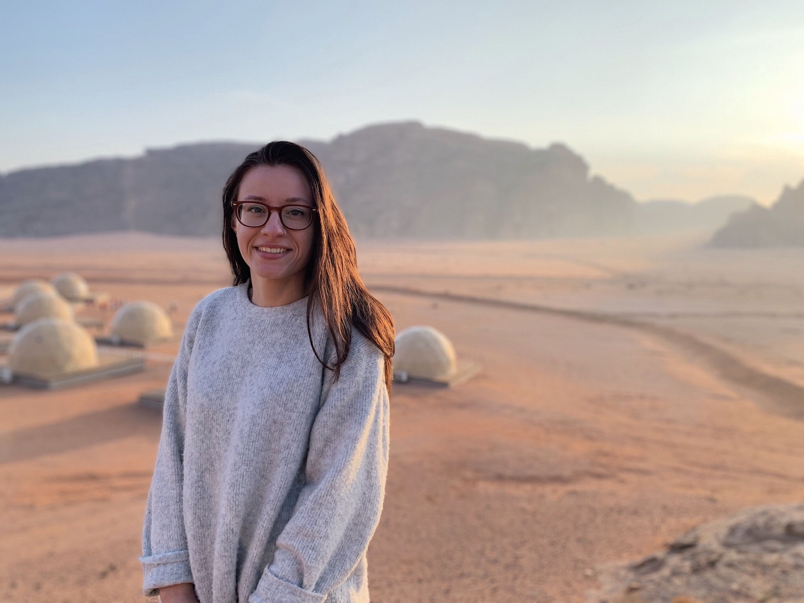

Welcome

ConnectLinkedin | GitHub pasco.a@northeastern.edu
Hi there. My name is Alanna, but most call me Lana.
I’m currently pursuing a master’s degree in computer science at Northeastern University, delving into two computer systems courses at the moment. That means I spend 90% of my day reading and writing code and somehow an additional 90% debugging.
I’m also currently seeking an internship that will contribute to my life pursuit of using programming to transform and improve the lives of people around the world.